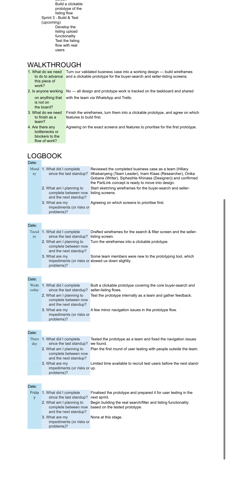
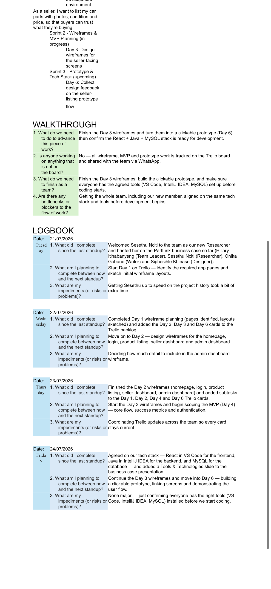

1. Agile Team Charter (20 Marks) - Evidence 10% + Reflection 10%
Evidence: Sprint 1 Trello board shows Team Formation, Roles and Responsibilities, Team Charter, Communication Plan. All checklists 4/4 complete. Team Leader: Onika Gobane, Researcher: Sesethu Nciti, UI Designer: Siphesihle Khinase. WhatsApp group and GitHub repository created.

2. User Stories and Tasks (20 Marks)
Evidence: 13-page User Stories document (User_Stories.pdf) covering Sprint 1-10. Format: "As a [role], I want [feature] so that [benefit]". Each card has Description, User Story, Tasks, Checklist.


Sprint 9 Examples (from your docs): Day 1: As a project manager, I want to update risk analysis so risks are assessed. Day 2: As a product owner, I want to collect user feedback. Day 3: As a user, I want polished UI. Day 4: As a team member, I want retrospective.
Sprint 10 Examples: Day 1: As a team member, I want to compile final documentation. Day 2: As stakeholder, I want final demo. Day 3: As PM, I want to deploy and close project.

3. Product Backlog & Sprint Backlog (40 Marks)
Product Backlog Evidence (from your Agile Logbook docs):
- Buyer Story: As a buyer, I want to search and filter car parts by brand, model and price, so that I can quickly find what I need. (From PartLink_Agile_Logbook_4-7_Aug.docx)
- Seller Story: As a seller, I want to list my car parts with photos, condition and price, so that buyers can trust what they're buying.
Sprint Backlog Evidence - 100% Completion:
Sprint 2: Community Research
4/4 Complete

Community Research, Problem ID, Surveys (21 responses), Data Gathering - Khayelitsha transport economy
Sprint 3: Business Case
4/4 Complete

Business Case, Value Proposition, Feasibility Analysis, Start-up Cost Research
Sprint 6: Wireframes
4/4 Complete

Wireframe Planning + 3 days Wireframes for 17 screens (landing, home, login, register, profile, listing, details, cart, checkout, settings, etc.)
Sprint 7: Development
4/4, 6/6, 5/5 Complete

Front-End React, Database Design (Users, Parking Spaces, Bookings ERD), Java Backend in IntelliJ IDEA, API Integration
Sprint 8: Testing
4/4 Complete

Authentication, User Testing Requirements, Updated Risk Analysis, System Testing
Sprint 10: Delivery
4/4 Complete

Final Documentation, Final Demo, Deployment and Closure
4. Agile Logbook (20 Marks)
Evidence 1 - Taskboard Walkthrough (from your DOCX):
Board Columns: Product Backlog | In Progress | Completed. Example In Progress: "Front-end development in React — building out all 17 wireframed screens", "Designing a colour palette page for the app (assigned by lecturer)". Completed: Community research, survey, business case, Wireframes, MVP scope tech stack agreed: React, Java, MySQL, GitHub repo created.
Walkthrough Q&A: What do we need to advance? Finish remaining React screens + API structure. Is anyone working off-board? No - all tracked on taskboard and GitHub. What to finish as team? Finish remaining screens. Bottlenecks? Getting comfortable with Git workflow and React component structure (nonmajor).
Evidence 2 - Daily Standups:
- 21/07/2026: Welcomed Sesethu Nciti as Researcher, briefed on business case
- 04/08/2026: Hillary left group, Onika Gobane stepped up as team lead, updated Trello, reassigned cards
- 05/08/2026: Finalised PartLink brand - colour palette, logo, typography, started colour palette page (lecturer request)
- 06/08/2026: Completed colour palette page, styling consistency
- 07/08/2026: Finished core front-end, welcomed Liyabona Ngece as newest member, onboarded to Trello/GitHub


Submission
GitHub Pages Link to Submit to Blackboard:
https://LiyabonaNgece16.github.io
Prod01-euc1-prod01-xythos.prod.files.blackboard.com - Paste this link
Tech Stack Documented: Frontend React (VS Code), Backend Java (IntelliJ IDEA), Database MySQL - as per logbook 24/07/2026